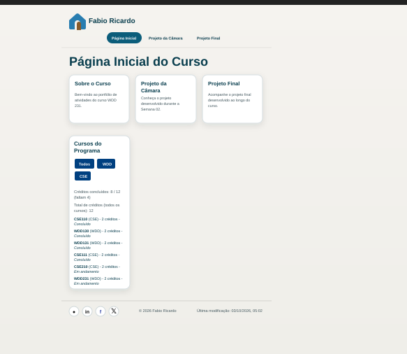
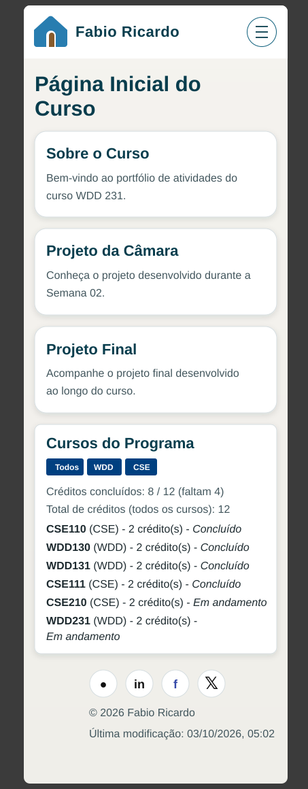

Nome do Site
Nome: FR Criatt Design
Motivo da escolha: O nome representa minha marca pessoal voltada à criação de sites e design digital, refletindo criatividade, identidade visual e profissionalismo.
Finalidade do Site
O site servirá como portfólio profissional, apresentando meus projetos de desenvolvimento web, design gráfico e identidade visual. Ele também incluirá um formulário de contato para potenciais clientes e parceiros interessados em serviços de criação digital.
Cenários
- Um visitante quer conhecer meus projetos anteriores e verificar minhas habilidades em HTML, CSS e JavaScript.
- Um cliente potencial deseja entrar em contato para solicitar um orçamento de criação de site ou logotipo.
Esquema de Cores
Primária: #1E1E1E (cinza escuro) — usada no fundo e cabeçalho.
Secundária: #FFD700 (dourado) — usada em títulos e destaques.
Neutra: #FFFFFF (branco) — usada no corpo do texto e áreas de conteúdo.
Tipografia
Fonte principal: Montserrat — usada em títulos e cabeçalhos.
Fonte secundária: Open Sans — usada em parágrafos e textos corridos.
Wireframe
O wireframe define a estrutura das páginas do site em versões para desktop e mobile.
Desktop: Cabeçalho fixo com navegação horizontal, área principal com projetos em cards e rodapé com links sociais.
Mobile: Menu hambúrguer, layout vertical com rolagem suave e cards empilhados.

